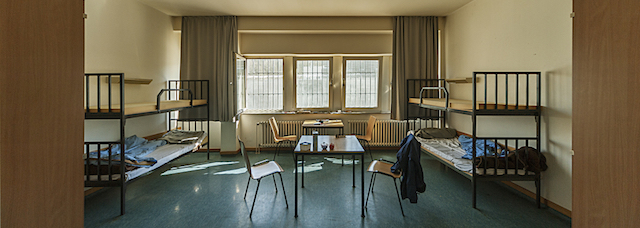

2018-04-09 08:00

On April 4th both houses of the Massachusetts legislature passed long-overdue criminal justice reforms. A huge omnibus bill now awaits Charlie Baker’s signature and Democrats will soon learn how moderate a Republican the governor really is. If the bill is signed and reforms make it into law, then next steps in fixing abuses of the criminal justice system should include police accountability and prison reform.
American courts are filled with brown and black and poor people guilty of relatively minor economic and drug offenses. Offenders are processed by zealous DA’s and the courts move them efficiently along a carceral assembly line greased by plea deals. Following often long and severe jail time devoid of any rehabilitation, a prisoner’s remaining rights and dignity are stolen. Former inmates can’t vote, they can’t find jobs, and they frequently have nowhere to live. The Pell Center described this irrational and costly mean-spiritedness:
“Americans are imprisoned for crimes that may not lead to prison sentences in other countries such as passing bad checks, minor drug offenses, and other non-violent crimes. Also, prisoners in the United States are often incarcerated for a lot longer than in other countries. For instance, burglars in the United States serve an average of 16 months in prison compared with 5 months in Canada and 7 months in England. [And] with an emphasis on punishment rather than rehabilitation, U.S. prisoners are often released with no better skills to cope in society and are offered little support after their release, increasing the chances of re- offending.”
On April 3rd WGBH’s Greater Boston ran a segment on one prison reform measure that could return a little rationality to the American criminal justice system. Investigator Cristina Quinn looked at Middlesex Sheriff Peter Koutoujian’s program for youthful offenders focused on rehabilitation, based on German practices recommended by the Vera Institute, and first pioneered at Connecticut’s Cheshire Correctional Institution.
According to Quinn, German prison reforms are based on a post-Holocaust Constitution which affirms human dignity. In addition, Germany’s 1976 Prison Act specifically defines prison as rehabilitation and tries to make the experience useful for both prisoner and society. The Prison Act’s first principles state:
Cruel and pointless punishments are expressly prohibited.
Even municipal laws in Germany protect prisoners. In 2008 Berlin passed a Juvenile Detention Act which gives special protection to young offenders. Berlin’s 2010 Remand Centre Act protects those in detention who have not [yet] been convicted of a crime. A 2011 Berlin ordinance governs how prisoner data can be used. A 2013 Preventive Detention Act rules that inmates kept in preventive detention beyond their sentences (such as sex or violent offenders with psychiatric problems) have the right to extra housing and treatment options.
The incarceration rate in the USA is 8-9 times higher than in Western Europe. At present ours is 666 per 100,000 citizens. In contrast, Canada’s is 114; Germany’s 77. Berlin, with a population of 3.5 million, has 2,800 inmates in its 8 prisons (a rate of 80 / 100,000). In Bristol County, with a population of 561,000, the county jail has 1,400 prisoners in 3 facilities — an incarceration rate of 250 / 100,000. Bristol County has a recidivism rate of 34% in a state with an average recidivism rate of 32% over 3 years.
A 2005 study conducted by the Justice Department tracked 400,000 offenders throughout 30 states and calculated a national recidivism rate of 76% over 5 years. A 2005 U.S. Sentencing Commission study found that almost half of all federal offenders were re-arrested within 8 years. One way to look at it is that 2.5 million incarcerated Americans form a small nation of hopeless savages. Or so the law-and-order types tell us.
But a contrarian view held by William Rhodes argues that the reverse is true — that, nationally, two-thirds of all offenders never return to prison and only 11% return to prison more than once. The problem with the Justice Department statistics, Rhodes writes, is that “offenders who repeatedly return to prison are like frequent mall visitors — they are overrepresented in samples used to estimate the rate at which offenders return to prison.”
“Locking up the same people over and over points to failures in the American penal system,” as one study noted. But whatever the precise percentage of recidivists, the fact remains — American prisons don’t spend much effort on rehabilitation. Norway, with an incarceration rate of 75 per 100,000, invests in rehabilitation and socialization and does not torment its offenders for life. As a result Norway has one of the world’s lowest recidivism rates — 20% compared with 52% in the United States. It is not surprising to discover that one of Norway’s maximum security prisons, Bastoy, with a recidivism rate of 16%, is run by a clinical psychologist and its guards receive three years of training.
Even in more traditional European prison settings one does not find the deprivation, starvation, isolation, and brutality of American institutions. An English-language brochure from Berlin’s Department for Justice and Consumer Protection describes their focus on helping inmates: “Taken as a whole, the Berlin prison system views itself as a system of enforcing therapy and treatment designed to address both the deficits of prisoners and their competences.”
Since 1980 a massive prison services industry has developed in the U.S. and segments of it serve even states without private prisons. Inmates are gouged at prison stores or for usurious telephone and video conferencing schemes. Outsourced medical, drug, and psychological services of questionable quality may be provided or denied at whim. Food throughout U.S. prisons is often substandard or insufficient. Abusive corrections officers, arbitrary solitary confinement, and overcrowded facilities are all too common hallmarks of American prisons. In some institutions prisoners are denied family visits.
In a German Justizvollzugsanstalt (prison), or JVA, cells are open during the day, inmates cook for themselves, and the law guarantees family visits. Inmates wear their own clothes, live in dorm-like clusters with other inmates, may receive gifts from their families, and obtain outside psychological and drug treatment services. Of course, prisoners are still locked up — but they don’t forget, or they learn, the importance of getting along in society.
Programs like this — and corresponding legal protections for the incarcerated — are necessary so long as we deprive shocking numbers of our fellow citizens of their liberty.
In The House of the Dead Fyodor Dostoevsky wrote, “The degree of civilization in a society can be judged by entering its prisons.” If Dostoevsky was right, then the jailers — and not our incarcerated neighbors — may be the true nation of savages.